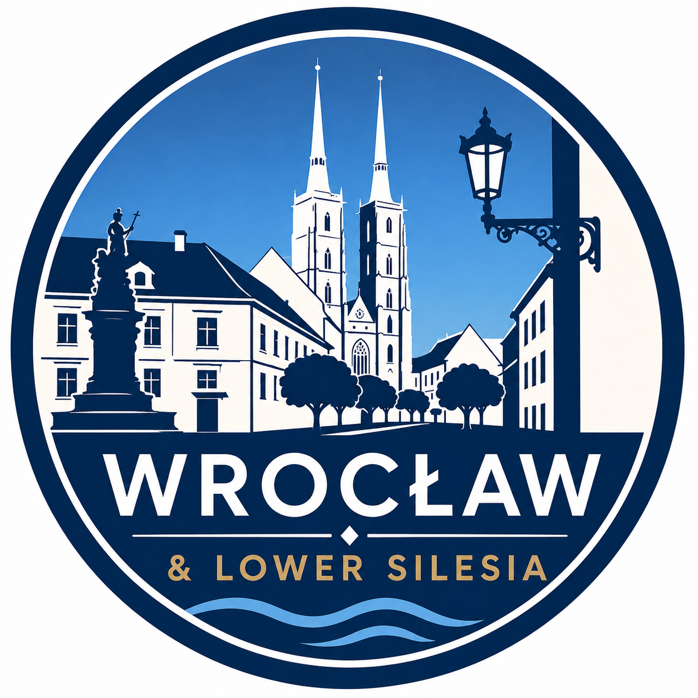

העיר העתיקה והגמדים
מסלול ראשון נעים בין כיכר השוק, הרחובות ההיסטוריים והגמדים שאסור לפספס.

Wroc-loveמסלולים חכמים למטיילים ישראליםמסלולים אינטראקטיביים בעברית שמסדרים את היום, מחברים בין המקומות הנכונים ומשאירים מספיק מקום לגילויים שבדרך.
מסלול טעימה מלא ליום אחד בעיר. פותחים בטלפון, בוחרים תחנה ויוצאים לדרך — בלי הרשמה ובלי כרטיס אשראי.
תשלום חד־פעמי ומאובטח למסלול שבחרתם.
בלי לזכור סיסמה ובלי לפתוח חשבון מסובך.
פותחים את המסלול מכל טלפון וחוזרים אליו מתי שרוצים.